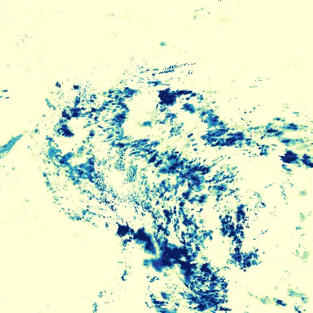

Benchmark / Near-lossless / imerg-pcp-12 / imerg-pcp-12-09
imerg-pcp-12-09
amazon · 2023-03-02 · sample details

Metadata
| id | imerg-pcp-12-09 |
|---|---|
| source | NASA/GPM_L3/IMERG_V07 (GPM IMERG Final Run V07, half-hourly) |
| asset | NASA/GPM_L3/IMERG_V07/20230302180000NASA/GPM_L3/IMERG_V07/20230302183000NASA/GPM_L3/IMERG_V07/20230302190000and 9 more |
| crs | EPSG:4326 |
| transform | -85.6 0.1 0.0 20.6 0.0 -0.1 |
| datetime_start | 2023-03-02T18:00:00Z |
| datetime_end | 2023-03-03T00:00:00Z |
| bands | precipitation to precipitation, 12 planes |
| shape | 12x512x512 |
| dtype | uint16 |
| unit | mm/hr |
| scale | 0.009999999776482582 |
| offset | 0 |
| input_sha256 | c93e99a88669bb71f4aa34724bfde687ce2151d0733f100c664efe097dde37c7 |
| site | amazon |
| regime | continental |
| lon | -60.0 |
| lat | -5.0 |
| grid_column | 944 |
| grid_row | 694 |